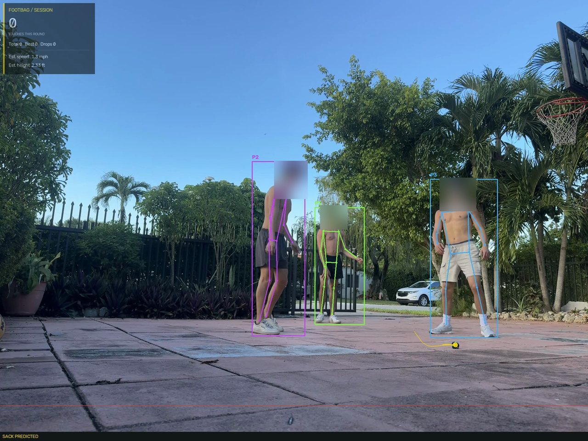

AUG 23
First version, on synthetic video built
Pose tracking, a Kalman-filtered sack tracker, touch and drop logic, and a HUD burned into the output. It only ever ran on generated test clips with a perfectly colored ball.
A local pipeline that watches footbag video, follows the players and the sack, and tries to count touches and drops. This page is the honest version of how it got built: what failed, what worked, and what the numbers say.
Three friends kicking a footbag on a driveway in Miami. The camera sits low on the ground, the footage is 1920x1440, and the sack is seafoam green and black and only 15 to 25 pixels across. The background is about the worst case for small-object detection: palm fronds, iron fence spikes, and sky.
The pipeline uses YOLO pose for the players, a tracker to keep their IDs, a Kalman filter for the sack, and a rule that looks for a downward-to-upward velocity change near a foot or knee to call a touch. Everything runs locally and the output is an annotated video plus a JSON report.

Pose tracking, a Kalman-filtered sack tracker, touch and drop logic, and a HUD burned into the output. It only ever ran on generated test clips with a perfectly colored ball.
The first real 20 minute recording arrived. I tuned HSV thresholds to the actual sack, added a region around the players and jump gating on the Kalman filter. It still locked onto backlit palm fronds and fence spikes. At this resolution a dark gap between green blades looks almost the same as the sack's green-to-black edge. That's a ceiling for color and shape heuristics on this background, not a tuning problem, so I trained a detector instead.
Finding the ball at all was the hard part. I used heuristics only to suggest candidates, then checked every one by eye. That gave 8 confirmed sacks and about 85 hard negatives such as fence spikes, shadows, and shoe soles. The fine-tuned model found 3 of 4 known sightings with no false positives, but recall was thin.
Two bugs only showed up against real footage, not in the training metrics. The detector wasn't passing imgsz, so it silently ran at 640 and shrank an already tiny object. And the acceptance threshold was shared with the color detector, so it rejected correct detections that scored around 0.11.


I ran round 1's model across the full 20 minutes at very low confidence as a candidate finder. I then reviewed all 172 clusters one by one, and every one was a real sack. Retraining on 180 positives lifted the same detection that scored 0.11 to about 0.70. On real footage that meant 4 of 4 known sightings, no false positives in a broad sweep, and the pipeline's first real touch and drop events.


Every example so far was airborne, so a sack at someone's feet was invisible to the model. Bootstrapping can't fix that because it only finds what the model already believes. I found about 300 kick events by tracking ankle lift and pulled frames just before each peak. Only 5 of 103 candidates were real. Retraining with 5 ground examples still missed a held-out ground-level test.


I mined the roughly 206 kick events round 3 skipped and found 11 more real sightings, again about a 5% hit rate. That brought ground-level examples to 16 out of about 163. Validation metrics: precision 0.928, recall 0.909, mAP50 0.919. More importantly, a held-out ground-level frame the model never trained on went from no detection to about 0.28 confidence. That's generalization, not memorization.
Hand-estimating a box from a thumbnail turned out to be unreliable. Nearly every one of my first 11 boxes landed on a fence, car, or empty pavement until I checked a zoomed native-resolution crop.


Three people were getting IDs like P10, P18, P30. Switching to BoT-SORT with appearance re-identification and a longer occlusion buffer helped, but a trained ReID model changed nothing, which ruled out weak appearance matching. The real cause: the pose model had the same missing imgsz bug, so a player standing far away behind fence bars went undetected for 9 to 16 seconds at a time. No tracker can re-identify someone the detector never saw.
Fixing that made it worse at first (max ID 21 to 33) because the higher resolution produced duplicate boxes on the same player. Tighter NMS brought it down. Net result: max ID 30 to 19. Better, not solved.
The CLI now writes a JSON report and a local HTML review page, encodes browser-playable video, and cleans up after failed runs. 19 offline regression tests run in CI. Predicted positions from the Kalman filter can no longer create scoring events.
This is the part a demo video would hide. On real footage the system runs end to end, but it isn't accurate enough to keep score.
| Clip | Frames | Sack seen | Predicted | Missing |
|---|---|---|---|---|
| 60 s recording | 1,799 | 545 (30%) | 617 | 637 |
| First 10 s of kicking | 300 | 42 (14%) | 89 | 169 |